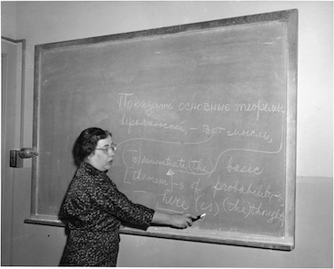

Vera Molnar is a traditionally trained French artist who in 1968 began working with computers. She's known for her line work and experimentation with pen plotters. She is considered a pioneer of computer and algorithmic arts.
In 1959, she invented the “machine imaginaire", an imaginary computer, in which she wrote the algorithms that dictated her work. She used the programming languages Fortran and Basic. In 1968 she finally got to work with an IBM 370 with an IBM 2250 CRT monitor, and a plotter. This is when her algorithms she developed a decade prior came to life and Vera began making computer generated plotter art.
Sources 1
2
3

Ida Rhodes, along with Betty Holberton, was one of six women to program ENIAC, and designed the C-10 programming language for the UNIVAC I in the early 1950s.
Universal Automatic Computer I, UNIVAC I, was the first commercially produced computer in the United States and the first to be used by the U.S. Social Security Administration.
Sources 1
2
3